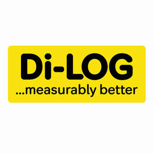

Trade Mark Journal No.2025/024 13 June 2025
UK00004182567 1 April 2025 (9,42)

- Class 9
- Measurement apparatus; Meter testing apparatus; Test probes [Electrical]; Electrical test apparatus; Test leads; Circuit testing instruments; Sensors [measurement apparatus], other than for medical use; Portable test apparatus; Test leads [Electrical]; Testing apparatus and instruments; Temperature measuring apparatus for scientific use; Electronic measurement sensors; Resistance testing apparatus; Testing probes, other than for medical purposes; Battery testing apparatus; Ammeters; Voltmeters; Ohmmeters; Wattmeters; Multimeters; Electrical voltage tester pens; Voltage meters; Multimeter leads; Thermocouple wires; Volt meters; Voltage detectors; Digital multimeters; Capacitance meters; Voltage testers; Neon light indicators for use in electrical circuits; Manometers; Voltage monitoring units; Electrical circuit testers; Electrometers; Electric current meters; Volt metres; Millivolt meters; Electrical measuring equipment; Digital multi-meters; Insulation resistance meters; Resistance boxes; Resistance measuring instruments; Insulation testers; Electric circuit testers; Mains testers (Electric -); Electric power analyzers; Electric measuring devices; Measuring devices, electric; Power testers; Circuit testers; Battery testers; Continuity testers; Electrical and electronic test apparatus and instruments; Volt sticks [electrical protection devices]; Earth test leads [Electrical]; Current testers; Earth testers; Test equipment for electronic apparatus; Testing apparatus for electronic equipment; Testing apparatus for checking electronic devices; Measuring apparatus not for medical purposes; Testing apparatus not for medical purposes; Humidity meters; Temperature meters for scientific use; Moisture meters; Pressure meters; Electric flow meters; Vibration meters; Decibel meters; Temperature logging apparatus; Noise level meters; Light meters; Temperature measuring apparatus for industrial use; Power meters; Sound level meters; Probes for testing integrated circuits; Testing software; Electric adaptors; Adaptors (Electric -); Electronic distance meters; Acoustic meters; Frequency meters; Power analyzers.
- Class 42
- Technical measuring and testing; Development of measuring and testing methods; Calibration [measuring]; Component testing; Quality testing; Design of measurement systems; Product testing; Testing of apparatus; Design and development of testing and analysis methods; Testing, analysis and evaluation of the goods of others for the purpose of certification; Development of testing methods; Product safety testing; Product quality testing; Testing, analysis and evaluation of the services of others for the purpose of certification; Testing the functionality of apparatus and instruments; Testing, authentication and quality control; Engineering testing; Conducting industrial tests; Testing of apparatus in the field of electrical engineering; Analysis and testing services relating to electrical engineering apparatus; Environmental testing.
Di-Log ltd
Di-LOG Ltd